TechEd Amsterdam 2005 – I’ll Be There
I am looking forward to TechEd Amsterdam 2005. No doubt that it will be a great experience and there will be a lot of interesting seminars given.
And do not forget to register to the BeLux Country Drink!
I am looking forward to TechEd Amsterdam 2005. No doubt that it will be a great experience and there will be a lot of interesting seminars given.
And do not forget to register to the BeLux Country Drink!
I don't use UML on a daily basis, therefore it is handy to have a summary of the UML diagrams. A very good quick reference of UML can be found here
In the course of next week I will release a new version of IStaySharp.WebBrowser. It contains new features, fixes and the set of properties and methods are made compatible with the webbrowser control in VS.NET 2005 (e.g.: EnableBack, DocumentText, ObjectForScripting, etc.).
New Features:
Velen die mij kennen weten dat ik een Urbanus fan ben, en eindelijk hebben ze de live shows van Urbanus op DVD gezet. Het heeft wel lang geduurd, maar ze hebben er nu toch direct 3 uitgegeven. Wat een aangename verrassing in de Fnac vandaag :-)
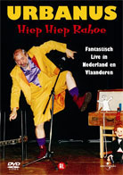
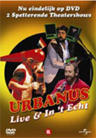
Ik hoef u denk ik niet te vertellen dat ik ze meegenomen heb :-)
It' s a pub located in Clearfield and it has a website. Some more pictures can be found here.
Does such a pub exists near Belgium? Please let me know :-)
I bought the domain name a couple of months ago but finally the site is online. The purpose of IStaySharp.NET is to provide a resource site for .NET developers (articles, faq, etc.) and to provide information on the projects I am working on.
The two projects currently online is log4xsl which is a xsl for viewing XML files generated by log4net. Below you find an example of the output:
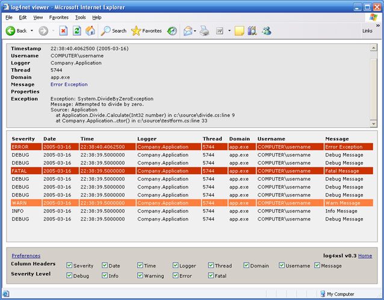
The WebBrowser library is the second project and fully embeds the webbrowser functionality of Internet Explorer and Mozilla. It also provides some extra functionality for Internet Explorer. Below you find a sampe project (top is IE and bottom is Mozilla) that can be downloaded on the site.
There are other projects coming and will be updated to the site. If you have any questions and/or feedback please contact me (contact mail can be found in the About menu).
Recently I purchased a new computer and I wanted to setup a RAID5 on 4x SATA Western Digital 200GB's. The motherboard is from Asus, the A8N SLI Deluxe which has 2 SATA controllers, the Silicon Image 3114R and NForce4. I also purchased a WD Raptor as boot disk which is connected to the NVRaid because it supports NCQ and the SI3114R not.
First of all I wanted to test if my raptor was faster than a normal 7200 rpm HD. And thankfully this was the case, it was about 10MB/s faster.
RAPTOR 74GB
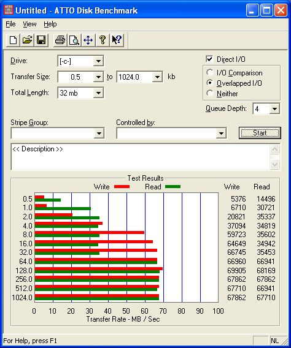
7200RPM 200GB
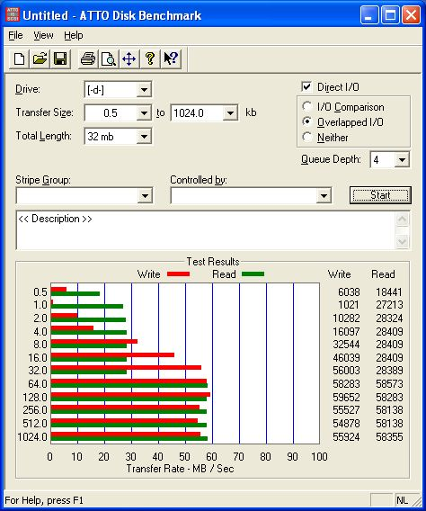
After that I tested some RAID (0, 1, 10) configurations on the SI3114 controller. One thing was clear, that mirroring on the SI3114 isn't optimized for reading, it's even a little bit slower than reading from a single disk. This has also been confirmed in a review (images are broken) from xbitlabs, where they also conclude that it doesn't have any optimizations for mirrored arrays, but focuses on RAID0. As you can see from the benchmarks there is no performance gain in RAID 1 (left below image) against a single disk (right up image), and RAID10 performs like a RAID0.
RAID 1 STRIPE 64
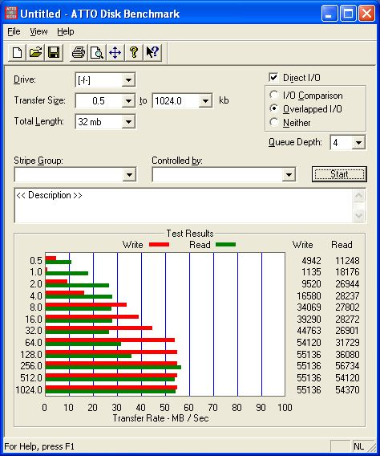
RAID 10 STRIPE 64
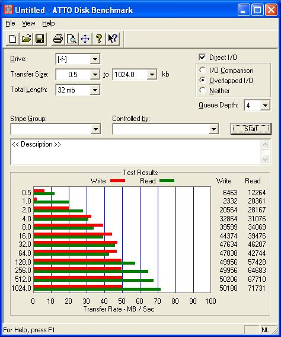
So, the SI3114 was not an option for me. Then I looked for setting up a software raid in Windows XP. Yes indeed, you can build a RAID 5 in Windows XP after doing a little hack :-). For more information check out the article at tomshardware named Using WindowsXP to Make RAID 5 Happen.
Here I did a benchmark with a stripe size of 0.5 (default) and 64K. As you can see this gives a big difference.
RAID 5 STRIPE 0.5
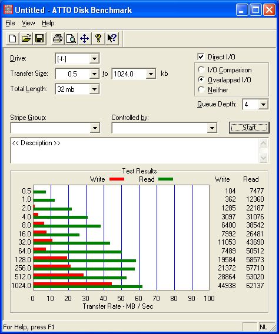
RAID 5 STRIPE 64
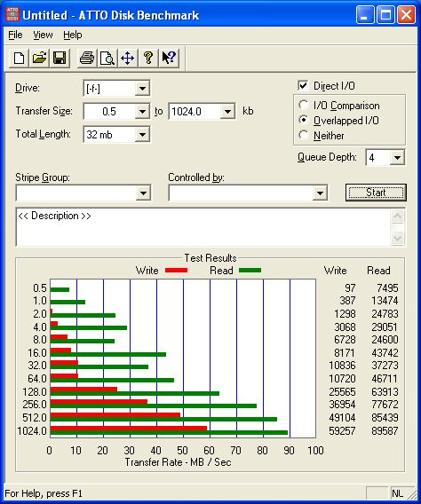
From the benchmarks with default stripe size I conclude that the read performance of RAID5 is about the same compared to a single disk, but the write performance is about the half of a single disk. This solution did not satisfy for me, because the performance is not what I expected, consumes CPU and I don't like the idea that I had to enable it by hacking some DLLs in Windows and there were some issues with Service Pack 2.
Therefore I concluded to buy a PCI-Express SATA Raid controller, namely the Areca 1220. The Areca RAID controllers perform very well and include all the RAID features you need. A very detailed review with a lot of benchmarks can be found here.
The ASUS A8N SLI Deluxe does have 2x 8xPCI-Express ports, which can be used for example for one VGA card and a RAID card, it doesn't need to be 2 VGA cards. To be sure I sended an email to Asus to ask if the Areca controller is compatible with the motherboard. The Areca stand at CeBIT told me they sended controllers to different manufactors (Asus, MSI, etc.) to test the compatibility and will update the 'Compatibility list' on the website.
UPDATE: Until now it's not yet possible to combine for example one VGA and one RAID card in an SLI Motherboard, it's a BIOS issue. So, I hope getting more news soon :-)
This weekend I visited CeBIT. It was a long trip due to road works and heavy rain, but it was worthwhile. There was a lot of people, but thankfully CeBIT at the Messegeländer in Hannover has about 30 halls. In one of the first halls, there was an exclusive car from Bugatti. Surprisingly there was no pricing indicated :-)
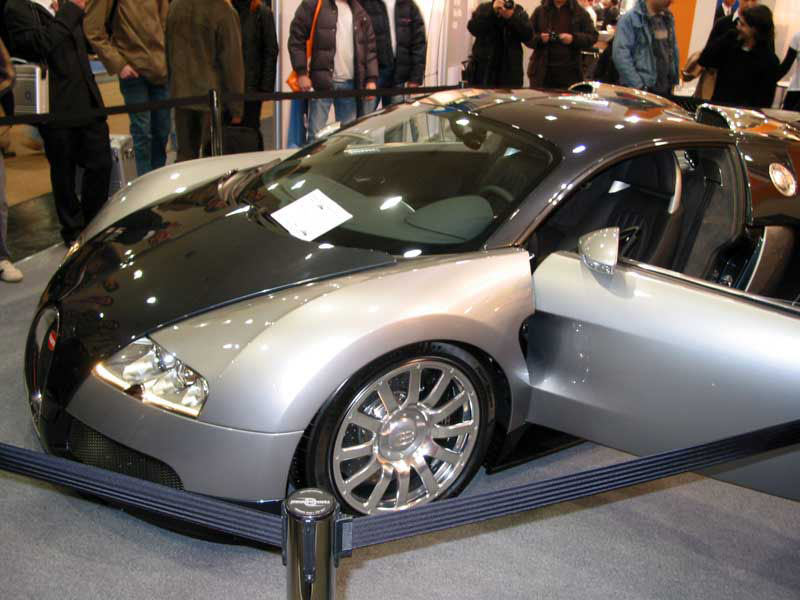
I think it was at the expo from AOpen that a couple of case-mods were shown. One of the most original one was certainly this one:
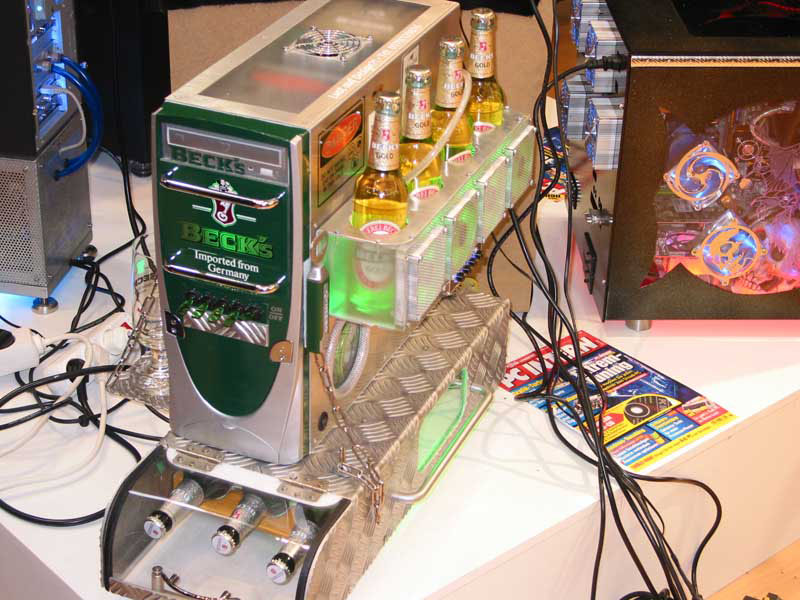
One of the manufactors that i didn't want to miss was Asus. For me there were 2 things that caught my attention: the new A8N SLI Premium which is the succesor of the A8N SLI Deluxe and of course a DUAL Geforce 6800 Ultra on one board. As you can see the board is huge and I don't think it will fit on every motherboard and/or case, but it's still a prototype of course.
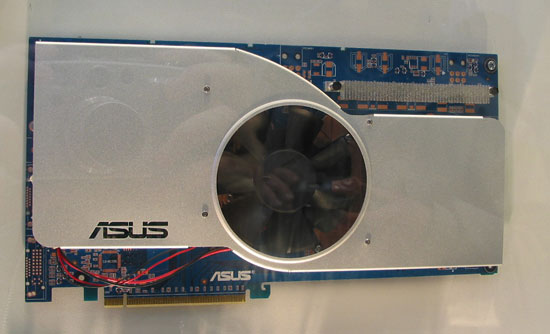
One of the things I focused on, was SATA PCI-Express RAID cards because I am planning to buy one for my system. The most well known RAID card in this category at this very moment is Areca, who were present too. The card that I am planning to buy is the ARC-1220 with 8x SATA ports.
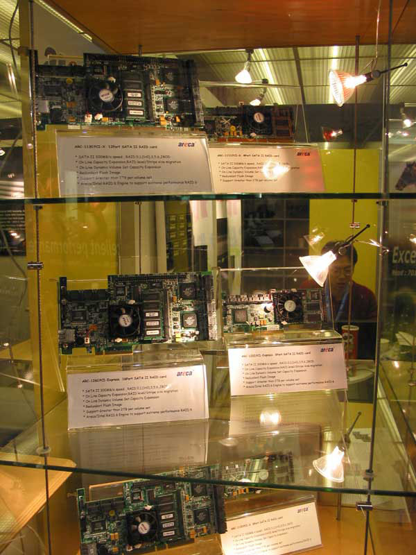
HighPoint showed also their latest products and in particular the RocketRaid 2320, which is an 8 channels PCI-Express to SATA II host adapter. The new products are included in the product guide that I took from the stand at CeBIT. The products they showed are listed here.
I also went to 3Ware, and they told to me that the PCI-Express RAID cards will be released by November of this year.
It was a long weekend, and I spent most of the time in the car but it was fun and interesting. See you at CeBIT 2006 :-)
If it depends on Shawn Burke (Developer Division Program Manager) it must be possible to ship the Windows Forms source code and PDBs in version .NET 2.0. More information about that great idea can be found on the blog
I am currently working on a project where we have to interact several applications (COM, .NET, Linux, Java, etc.) together through a messaging system. One of the applications is a windows application that exposes an application object. In this way we can host it through .NET. The problem is that the application object doesn't expose any events; no exit, close or quit event. What I need to properly close the .NET host.
In contrast to the Win32 SendMessage you can use system hooks to listen to events from any application. But after googling I noticed that .NET doesn't support global hooks! The only way to accomplish, is to make an unmanaged C++ DLL that catches the system hooks, and the .NET DLL will receive them. An example of that can be found on CodeProject Global System Hooks in .NET. Unfortanetly it only receives mouse and keyboard events, so I have to extend it to receive application events.